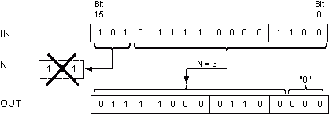

[SHL_DW] DWORD shift left
Description
输入值 IN 的位左移输入值 N 中指定的步数。
通过循环释放的低位位位置被分配值“0”。被推出的高阶位位置将丢失。
结果存储在输出参数 OUT 中。
N = 3 和数据类型 WORD 的示例：

Parameters
参数 | 宣言 | 数据类型 | 描述 | 默认 |
|---|---|---|---|---|
IN | 输入 | DWORD | 输入值 | 0 |
N | 输入 | WORD | 值 IN 移动的位数。 | 0 |
OUT | 输出 | DWORD | 产值 | 0 |
输入值 IN 的位左移输入值 N 中指定的步数。
通过循环释放的低位位位置被分配值“0”。被推出的高阶位位置将丢失。
结果存储在输出参数 OUT 中。
N = 3 和数据类型 WORD 的示例：

参数 | 宣言 | 数据类型 | 描述 | 默认 |
|---|---|---|---|---|
IN | 输入 | DWORD | 输入值 | 0 |
N | 输入 | WORD | 值 IN 移动的位数。 | 0 |
OUT | 输出 | DWORD | 产值 | 0 |